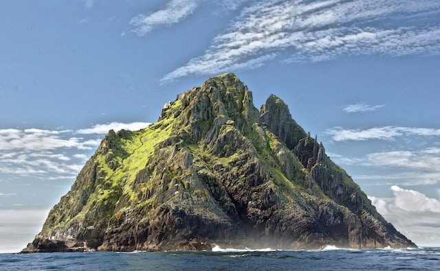

Daleke destinacije
Za mene su daleke destinacije više od samo geografskih tačaka. One
predstavljaju kapije ka čudesima drugih kultura, prirodnim lepotama
koje oduzimaju dah i iskustvima koja obogaćuju dušu. Kroz svoje priče,
želim vam preneti osećaj uzbuđenja koji se javlja kada koraknete na
nepoznato tlo, spoznate raznolikost sveta i otvorite svoj um za nove
perspektive.
Singapur
Singapur, fascinantna metropola jugoistočne Azije, sjedinjuje
modernu urbanu estetiku sa bogatom kulturom. Ovaj mali grad-država
iznenađuje posetioce svojim visokotehnološkim inovacijama,
besprekornom infrastrukturom i šarenolikim gastronomskim scenama.
Veliki kanjon
Veliki kanjon, zadivljujući prirodni fenomen smešten u Arizoni, SAD,
predstavlja spektakularnu sliku geološke istorije i prirodne lepote.
Njegove ogromne mermerizirane stene i duboke provalije pružaju
posmatračima jedinstvenu priliku da osete snagu vekovima oblikovane
prirode.
Evropa
Evropa, kontinent bogate istorije i raznolike kulture, obuhvata
različite zemlje i jezike koji se prepliću u harmoničnom mozaiku. Od
impozantnih katedrala u Evropskim prestonicama do slikovitih sela na
italijanskim brežuljcima, Evropa očarava posetioce svojom estetikom i
nasleđem.
Irska
U srcu Irske, ostrva sa bezbrojnim nijansama zelene, leži bogata
istorija i mistika. Irska je dom živahne muzičke scene, priča o
vilenjacima i legendi o selima na ivici litica. Posetioci se mogu
izgubiti u prelepim pejzažima, poput Antrim obale ili Zelenog puta,
i istražiti istorijske gradove poput Dublina, koji odišu duhom
prošlih vekova.

Norveska
Zemlja beskrajnih fjordova i planinskih lanaca, očarava svojom
prirodnom lepotom. Poznata po spektakularnom fenomenu polarne
svetlosti, Norveška je zemlja vikinga i drevnih saga. Posetioci mogu
istraživati veličanstvene fjordove, poput Geirangerfjorda, ili preći
Drugi Arktički put. Istorijski gradovi nude bogatu kulturnu baštinu,
dok tradicionalna sela na ivici fjordova čuvaju autentičan duh
prošlih vremena.
Srbija
Srbija, zemlja kontrasta smeštena na raskrsnici Balkana, ima bogatu
istoriju koja se ogleda u utvrđenim gradovima i spomenicima. Posetioci
mogu istražiti vibrirajući umetnički i kulturni život u Beogradu,
uživati u tradicionalnoj srpskoj kuhinji i doživeti gostoljubivost
lokalnih stanovnika. Srbija takođe obiluje prirodnim lepotama, od
planinskih vrhova do rečnih dolina, pružajući raznovrsne mogućnosti za
aktivni odmor.
Tara
Planina Tara, biserna prirodna lepota zapadne Srbije, očarava
posetioce svojom netaknutom prirodom i bogatstvom biodiverziteta.
Nacionalni park Tara, sa svojim šumama bukvi, raznolikim
životinjskim vrstama i dubokim kanjonima, pruža idealno okruženje za
ljubitelje prirode i avanturiste. Pogled s vidikovca "Banjska stena"
na prostranost Drine i okolnih šuma ostavlja neizbrisiv utisak i
čini Taru izuzetnom destinacijom za planinarenje i opuštanje u
prirodnom okruženju.
Uvac
Uvac, slikovita reka u zapadnom delu Srbije, krije jedan od
najlepših prirodnih fenomena - specifične meandre i kanjone koji su
stvorili pejzaž jedinstvene lepote. Njegova meandrirajuća voda i
okolni stenoviti kanjoni pružaju spektakularne prizore, posebno
tokom zalaska sunca. Posetioci mogu uživati u vožnji čamcem kroz
ovaj prirodni rezervat i posmatrati beloglave supove kako lete iznad
kanjona, stvarajući nezaboravno iskustvo u netaknutoj prirodi.